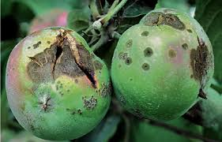
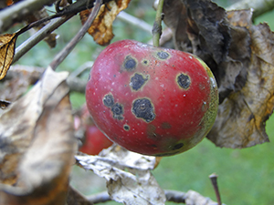

These signs include twisted and puckered leaves that have black, circular scabby spots on the underside. On the upper surface the spots look velvety and have an olive-green, sooty appearance. The spots may fuse and cover the whole leaf. |
  |